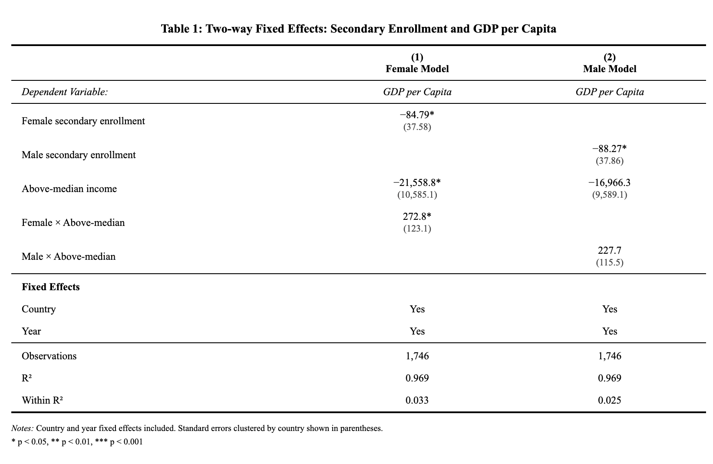
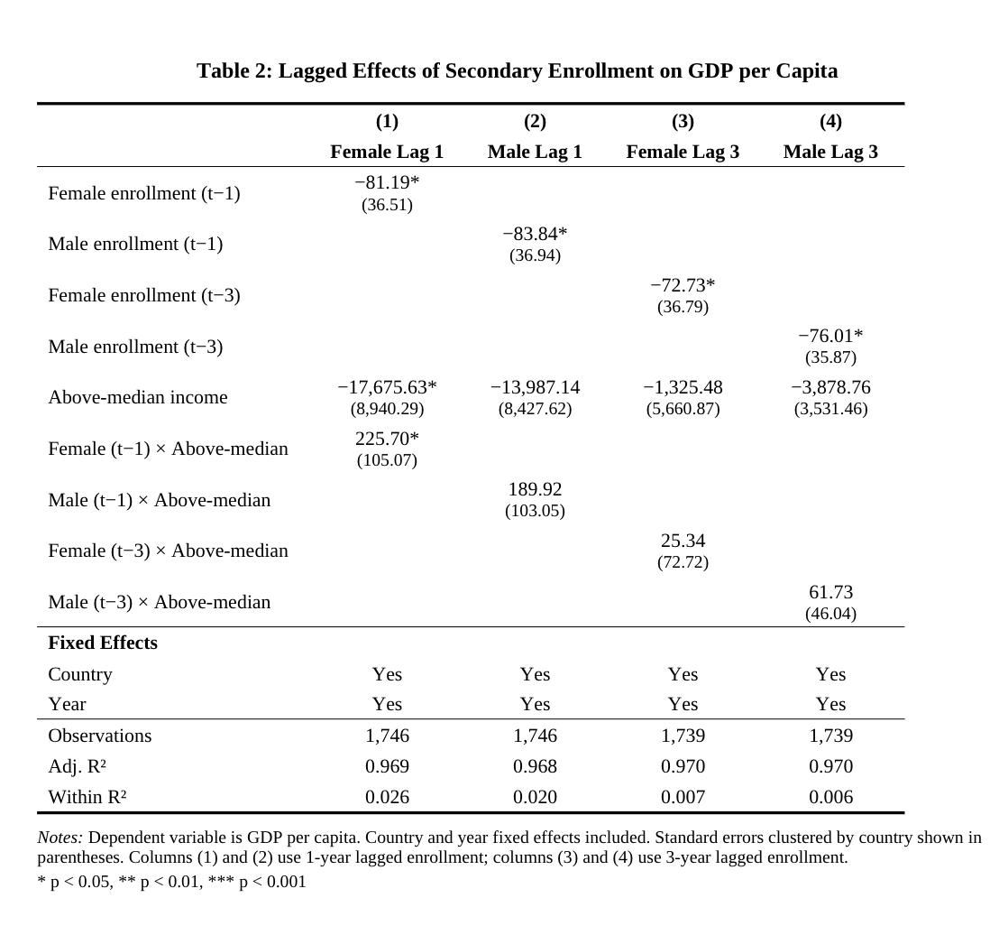
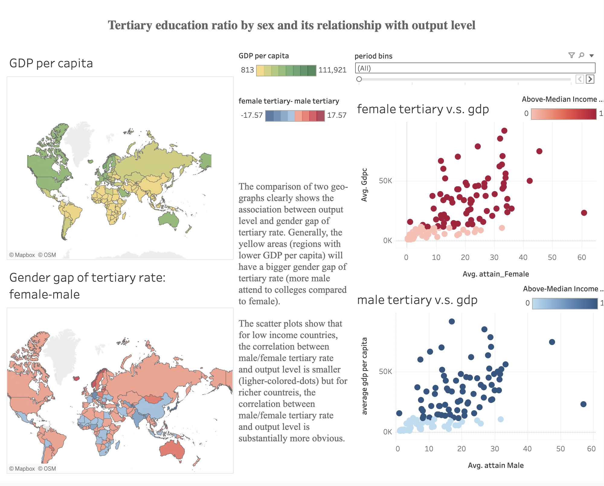

This project is an updated extension of my senior-year Economic Development group paper(see former paper in the Appendix) using cross-country World Bank panel data to study how female higher education relates to economic output (GDP per capita). In the original report, we primarily relied on pooled cross-sectional patterns and did not fully address unobserved differences across countries and years. In my original contribution, I ran interaction models using an above-median income dummy to compare how the education–output relationship differs between richer and poorer economies.
In the updated version, I strengthened the empirical design by introducing two-way fixed effects (country and year) and country-clustered standard errors, reducing bias from time-invariant country characteristics and global shocks. I also built an interactive Tableau dashboard that connects geographic patterns in GDP per capita with the gender gap in tertiary attainment (female minus male), and adds split views to compare female vs. male tertiary attainment against output under the same income benchmark.
Because education can affect growth with a delay (human capital accumulation, labor-force participation, productivity), I extended the model to include lagged tertiary enrollment measures. The lagged specifications help interpret why contemporary education measures may appear weak or even negative in lower-income settings: the “payoff” may occur over a longer horizon and may be masked by short-run tradeoffs (e.g., schooling vs. labor supply).
Together, the fixed-effects and lagged models support a more realistic policy interpretation: investments in female education can have substantial long-run potential, and the magnitude of observed gains depends on a country’s broader economic context.
Research question. How is tertiary education attainment associated with GDP per capita across countries, and how does this relationship differ by sex (female vs. male) and by economic context?
Hypothesis 1 (female attainment). Countries with higher female tertiary education attainment tend to have higher GDP per capita.
Hypothesis 2 (heterogeneity by income). The strength of the education–output relationship is larger in above-median income contexts than in below-median contexts.
Hypothesis 3 (gender gap). Lower-income regions tend to display larger gender gaps in tertiary education attainment (male tertiary attainment higher than female), compared with higher-income regions.
This report uses a country-year dataset built from World Bank-style
indicators. The key fields include: country: country
name
Year: calendar year
gdpc: GDP per capita
attain_Female: female tertiary attainment
attain_Male: male tertiary attainment
enroll_secondary_femalefemale secondary education
enrollment
enroll_secondary_malemale secondary education
enrollment
region: world region
income_group: categorical income grouping
We treat blank values as missing observations.
#read dataset
df <- read.csv("World Bank Raw.csv")
#remove junk columns and rename related columns
df <- df %>%
select(-X, -X.1) %>%
mutate(
country = as.factor(country),
Year = as.integer(Year),
gdpc = as.numeric(gdpc),
attain_Female = as.numeric(attain_Female),
attain_Male = as.numeric(attain_Male),
enroll_secondary_female = as.numeric(enroll_secondary_female),
enroll_secondary_male = as.numeric(enroll_secondary_male)
)A simple cross-country regression can confuse true relationships with persistent differences across countries (for example, institutions, geography, or long-run development paths) and global time shocks (for example, financial crises). Two-way fixed effects help address this by comparing countries to themselves over time, and by netting out shared year-to-year shocks across all countries.
While the original analysis focused on tertiary educational attainment, subsequent fixed effects estimates revealed limited within-country variation at the tertiary level, particularly for developing economies where access remains restricted. To better capture gendered differences in human capital accumulation and their economic implications, the analysis is extended to secondary school enrollment. Secondary education represents an earlier and more broadly accessible stage of human capital formation, especially for women in lower-income contexts, and provides richer temporal variation for identifying heterogeneous growth associations. This extension allows for a more nuanced assessment of the potential and timing of returns to female education across stages of development.
\[ GDPpc_{it} = \beta_1 SeEdu_{it} + \beta_2 AboveMedian_i + \beta_3 (SeEdu_{it} \times AboveMedian_i) + \alpha_i + \gamma_t + \varepsilon_{it} \]
Where:
\[SeEdu_{it}\] is either female or male secondary education enrollment
\[AboveMedian_i\] is an indicator that equals 1 if GDP per capita is at or above the overall median
\[\alpha_i\] is the country fixed effect
\[\gamma_t\]is the year fixed effect
df <- df %>%
mutate(median_dummy = ifelse(gdpc >= 11337.5, 1, 0))library(fixest)
#Two way fixed effects regression Female secondary enrollment
fe_enrollF_2way <- feols(
gdpc ~ enroll_secondary_female + median_dummy + enroll_secondary_female:median_dummy | country + Year,
data = df,
cluster = "country"
)## NOTES: 4,077 observations removed because of NA values (LHS: 1,650, RHS: 4,077, Fixed-effects: 1,650).
## 9/0 fixed-effect singletons were removed (9 observations).summary(fe_enrollF_2way)## OLS estimation, Dep. Var.: gdpc
## Observations: 1,746
## Fixed-effects: country: 162, Year: 20
## Standard-errors: Clustered (country)
## Estimate Std. Error t value Pr(>|t|)
## enroll_secondary_female -84.7934 37.5772 -2.25651 0.025384
## median_dummy -21558.7698 10585.0776 -2.03671 0.043317
## enroll_secondary_female:median_dummy 272.8204 123.0791 2.21663 0.028050
##
## enroll_secondary_female *
## median_dummy *
## enroll_secondary_female:median_dummy *
## ---
## Signif. codes: 0 '***' 0.001 '**' 0.01 '*' 0.05 '.' 0.1 ' ' 1
## RMSE: 3,945.8 Adj. R2: 0.9655
## Within R2: 0.033307#Two way fixed effects regression Male secondary enrollment
m_male_enroll_2way <- feols(
gdpc ~ enroll_secondary_male+ median_dummy + enroll_secondary_male:median_dummy | country + Year,
data = df,
cluster = "country"
)## NOTES: 4,077 observations removed because of NA values (LHS: 1,650, RHS: 4,077, Fixed-effects: 1,650).
## 9/0 fixed-effect singletons were removed (9 observations).summary(m_male_enroll_2way)## OLS estimation, Dep. Var.: gdpc
## Observations: 1,746
## Fixed-effects: country: 162, Year: 20
## Standard-errors: Clustered (country)
## Estimate Std. Error t value Pr(>|t|)
## enroll_secondary_male -88.2715 37.8566 -2.33173 0.020953 *
## median_dummy -16966.2547 9589.0575 -1.76933 0.078731 .
## enroll_secondary_male:median_dummy 227.6920 115.4522 1.97217 0.050303 .
## ---
## Signif. codes: 0 '***' 0.001 '**' 0.01 '*' 0.05 '.' 0.1 ' ' 1
## RMSE: 3,962.2 Adj. R2: 0.965213
## Within R2: 0.025289
Table 1 compares the growth effects of female and male secondary enrollment using two-way fixed effects.
In below-median income countries, higher secondary enrollment is associated with short-run declines in GDP per capita for both females (−84.8) and males (−88.3), suggesting similar transitional adjustment costs in poorer economies.
In contrast, the relationship becomes positive in higher-income countries, with a substantially larger effect for female education. The implied net effect of female secondary enrollment in above-median income countries is +188.0, compared to +139.4 for male enrollment, and the female interaction term is more precisely estimated. Overall, while secondary education exhibits heterogeneous growth effects by development level for both genders, the positive association with economic performance is stronger and more robust for female secondary enrollment.
Because the economic effects of secondary education are likely to unfold with a delay and the negative associations observed in poorer economies may reflect temporary transitional adjustment costs rather than persistent losses, the next section introduces a lagged fixed-effects specification to examine whether these gender-differentiated patterns persist over time.
Education may influence economic output with a delay due to human capital accumulation, cohort transitions into the labor market, and productivity spillovers. To test whether the education–output relationship becomes clearer when allowing time for effects to materialize, I estimate two-way fixed effects models using lagged tertiary education measures.
Specifically, I regress GDP per capita on lagged female or male secondary enrollment, an indicator for above-median income status, and the interaction between lagged enrollment and income group. Separate specifications are estimated for female and male enrollment, and for one-year (t−1) and three-year (t−3) lags. All models still include country and year fixed effects.
#delayed payoff for female education
df <- df %>%
arrange(country, Year) %>%
group_by(country) %>%
mutate(
female_enroll_lag1 = dplyr::lag(enroll_secondary_female, n = 1),
female_enroll_lag3 = dplyr::lag(enroll_secondary_female, n = 3),
male_enroll_lag1 = dplyr::lag(enroll_secondary_male, n = 1),
male_enroll_lag3 = dplyr::lag(enroll_secondary_male, n = 3)
) %>%
ungroup()
df <- df %>% arrange(country, Year) %>%
group_by(country) %>%
mutate(
female_enroll_lag1 = lag(enroll_secondary_female, 1),
female_enroll_lag3 = lag(enroll_secondary_female, 3),
male_enroll_lag1 = lag(enroll_secondary_male, 1),
male_enroll_lag3 = lag(enroll_secondary_male, 3)
) %>% ungroup()
library(fixest)
m_lag1_f <- feols(
gdpc ~ female_enroll_lag1 * median_dummy | country + Year,
data = df, cluster = "country"
)## NOTES: 4,077 observations removed because of NA values (LHS: 1,650, RHS: 4,077, Fixed-effects: 1,650).
## 9/0 fixed-effect singletons were removed (9 observations).summary(m_lag1_f)## OLS estimation, Dep. Var.: gdpc
## Observations: 1,746
## Fixed-effects: country: 162, Year: 20
## Standard-errors: Clustered (country)
## Estimate Std. Error t value Pr(>|t|)
## female_enroll_lag1 -81.1877 36.5054 -2.22399 0.027540 *
## median_dummy -17675.6275 8940.2927 -1.97707 0.049741 *
## female_enroll_lag1:median_dummy 225.7010 105.0683 2.14814 0.033198 *
## ---
## Signif. codes: 0 '***' 0.001 '**' 0.01 '*' 0.05 '.' 0.1 ' ' 1
## RMSE: 3,797.2 Adj. R2: 0.968597
## Within R2: 0.025537m_lag1_m <- feols(
gdpc ~ male_enroll_lag1 * median_dummy | country + Year,
data = df, cluster = "country"
)## NOTES: 4,077 observations removed because of NA values (LHS: 1,650, RHS: 4,077, Fixed-effects: 1,650).
## 9/0 fixed-effect singletons were removed (9 observations).summary(m_lag1_m)## OLS estimation, Dep. Var.: gdpc
## Observations: 1,746
## Fixed-effects: country: 162, Year: 20
## Standard-errors: Clustered (country)
## Estimate Std. Error t value Pr(>|t|)
## male_enroll_lag1 -83.8395 36.9418 -2.26951 0.024565 *
## median_dummy -13987.1387 8427.6235 -1.65968 0.098926 .
## male_enroll_lag1:median_dummy 189.9182 103.0546 1.84289 0.067184 .
## ---
## Signif. codes: 0 '***' 0.001 '**' 0.01 '*' 0.05 '.' 0.1 ' ' 1
## RMSE: 3,808.6 Adj. R2: 0.968409
## Within R2: 0.01969m_lag3_f <- feols(
gdpc ~ female_enroll_lag3 * median_dummy | country + Year,
data = df, cluster = "country"
)## NOTES: 4,083 observations removed because of NA values (LHS: 1,650, RHS: 4,083, Fixed-effects: 1,650).
## 10/0 fixed-effect singletons were removed (10 observations).summary(m_lag3_f)## OLS estimation, Dep. Var.: gdpc
## Observations: 1,739
## Fixed-effects: country: 161, Year: 19
## Standard-errors: Clustered (country)
## Estimate Std. Error t value Pr(>|t|)
## female_enroll_lag3 -72.7252 36.7914 -1.976692 0.049795 *
## median_dummy -1325.4792 5660.8697 -0.234148 0.815170
## female_enroll_lag3:median_dummy 25.3358 72.7221 0.348392 0.728004
## ---
## Signif. codes: 0 '***' 0.001 '**' 0.01 '*' 0.05 '.' 0.1 ' ' 1
## RMSE: 3,739.8 Adj. R2: 0.969801
## Within R2: 0.006964m_lag3_m <- feols(
gdpc ~ male_enroll_lag3 * median_dummy | country + Year,
data = df, cluster = "country"
)## NOTES: 4,083 observations removed because of NA values (LHS: 1,650, RHS: 4,083, Fixed-effects: 1,650).
## 10/0 fixed-effect singletons were removed (10 observations).summary(m_lag3_m)## OLS estimation, Dep. Var.: gdpc
## Observations: 1,739
## Fixed-effects: country: 161, Year: 19
## Standard-errors: Clustered (country)
## Estimate Std. Error t value Pr(>|t|)
## male_enroll_lag3 -76.0130 35.8660 -2.11936 0.035603 *
## median_dummy -3878.7569 3531.4636 -1.09834 0.273705
## male_enroll_lag3:median_dummy 61.7346 46.0437 1.34078 0.181891
## ---
## Signif. codes: 0 '***' 0.001 '**' 0.01 '*' 0.05 '.' 0.1 ' ' 1
## RMSE: 3,741.5 Adj. R2: 0.969773
## Within R2: 0.006061
Table 2 presents two-way fixed-effects estimates of the lagged effects of female and male secondary enrollment on GDP per capita. For both genders, lagged enrollment remains negatively associated with economic output in below-median income countries; however, the magnitude of these negative coefficients is smaller than in the contemporaneous specifications and declines further when moving from one-year to three-year lags. This attenuation is consistent with the interpretation that the adverse effects observed in poorer economies primarily reflect short-run transitional adjustment costs —such as delayed labor force entry or institutional constraints—rather than persistent reductions in economic performance.
In higher-income countries, the interaction between lagged female enrollment and above-median income remains positive and statistically significant at the one-year horizon, indicating that delayed growth returns to female education emerge as adjustment costs dissipate. By contrast, the corresponding effects for male enrollment are weaker and less precisely estimated, reinforcing the conclusion that the delayed economic payoff from secondary education is both more pronounced and more robust for females.
While the fixed-effects regressions provide evidence of heterogeneous and delayed returns to secondary education across income levels and gender, they necessarily summarize these dynamics through average coefficients.
To complement the econometric results and make the underlying cross-country patterns more transparent, the next section introduces an interactive Tableau dashboard. The dashboard visualizes geographic variation in GDP per capita, female and male tertiary attainment, and the gender gap in higher education across time, allowing for a more intuitive comparison of educational outcomes and economic performance.
By enabling users to explore temporal changes and regional heterogeneity directly, the visualization helps bridge the gap between the regression evidence and the broader structural patterns driving the observed delayed and gender-specific returns to education.
-a GDP per capita country map
-a tertiary gender-gap map (female minus male)
-female tertiary vs GDP scatter plot
-male tertiary vs GDP scatter plot
-a time-bin filter to compare patterns across periods
 Click image to view interactive dashboard
The GDP-per-capita map shows a clear global income gradient, with higher GDP per capita concentrated in North America, Western Europe, and parts of Oceania, while many countries in Sub-Saharan Africa and South Asia appear in lower GDP per capita ranges.
The tertiary gender-gap map (female minus male) suggests that the gender gap is not randomly distributed: several lower-income regions show larger negative gaps, indicating that men are more likely to reach tertiary education than women. In contrast, higher-income regions tend to have smaller gaps or even positive gaps in some countries.
The scatter plots reinforce a visible heterogeneity pattern: among above-median countries, higher female or male tertiary attainment levels align more clearly with higher GDP per capita levels. Among below-median countries, the relationship appears weaker and more compressed near the origin, which is consistent with the idea that other constraints (institutional capacity, labor market structure, or time-to-return dynamics) may moderate the short-run relationship between education and output.
This study improves upon the original analysis by strengthening both the empirical framework and the interpretation of the education–output relationship. While the initial paper documented positive correlations between tertiary education and GDP per capita in simple OLS models, it was unable to draw clear conclusions once income and regional controls were introduced, leaving the role of female education inconclusive. The current analysis addresses this limitation by employing two-way fixed-effects models that control for time-invariant country characteristics and common global shocks, allowing identification to rely on within-country variation over time.
More importantly, this study explicitly models heterogeneity and timing. By interacting education with income status and introducing lagged specifications, the analysis separates short-run adjustment costs from delayed economic returns—an issue the original paper could not address. The attenuation of negative coefficients in lagged models provides a coherent explanation for why contemporaneous estimates in poorer countries appear negative, reframing them as transitional effects rather than evidence against educational investment.
Finally, the systematic comparison of female and male education across income groups and time horizons reveals a consistent pattern: female tertiary education exhibits stronger and more robust medium-term growth associations in higher-income settings, sharpening both the empirical contribution and policy relevance of the original work.
Despite these improvements, the analysis remains unable to establish definitive causality between education and economic growth. Although two-way fixed effects substantially reduce bias from unobserved heterogeneity, education investment may still be endogenous to economic conditions, policy choices, or institutional changes. Reverse causality—where higher income enables greater educational attainment—cannot be fully ruled out, nor can omitted variables such as education quality, labor market structure, or gender-specific labor force participation.
Moreover, the refined interpretation of negative short-run coefficients as adjustment costs does not imply that the timing or magnitude of these costs is precisely identified. The estimates describe average associations rather than policy-ready effect sizes, and the analysis cannot isolate the specific mechanisms—such as productivity, demographic change, or spillovers—through which female education influences output.
Several limitations point to directions for future research. First, tertiary education data—especially for female attainment—remain sparse for many low-income countries and earlier periods, limiting both statistical precision and the interpretability of geographic visualizations. Future work could address this by aggregating over longer horizons, incorporating alternative education measures, or integrating regional and micro-level data sources.
Second, while lagged specifications provide suggestive evidence of delayed returns, they remain a reduced-form approach. A natural extension would be to implement an instrumental-variables (2SLS) strategy using plausibly exogenous shocks to female education—such as compulsory schooling reforms or gender-targeted access policies—to better isolate causal effects, particularly in developing economies.
Finally, future research could examine heterogeneity beyond income levels, including regional variation, institutional quality, and gender-specific labor market outcomes. Combining causal identification strategies with richer visual analytics—such as dynamic dashboards tracking education–growth trajectories over time—would further strengthen both empirical insight and policy communication.